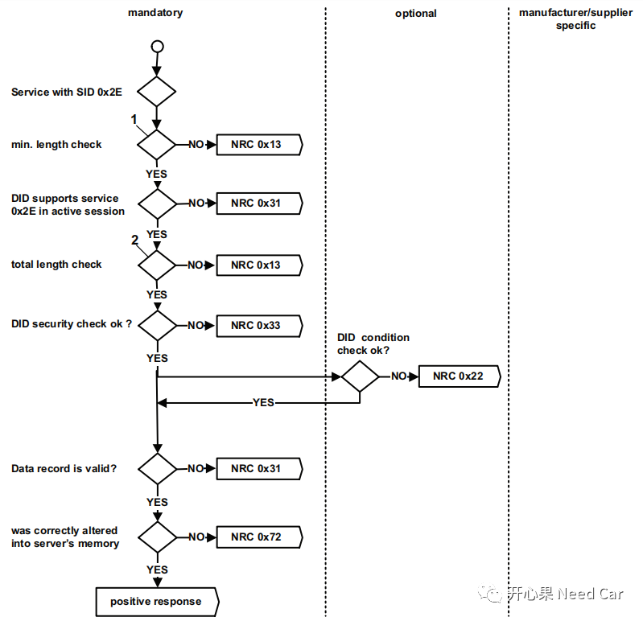
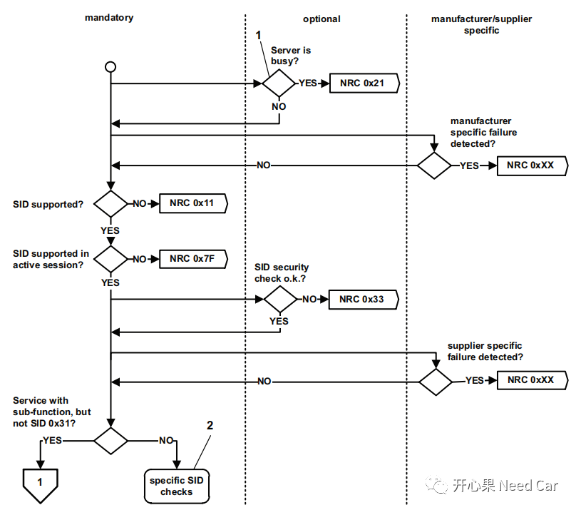
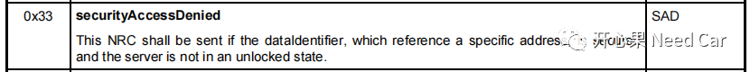

开心果 Need Car · 2022-01-12T20:22:00+08:00 · 微信原文
别翻书，如标题：UDS的$2E服务，发送$2E服务长度不对，服务没有解锁，NRC13和NRC33哪个先回复？先给答案：NRC33。为什么呢？我们需要再细聊一下。
1
$2E服务的NRC优先级

单看上图是不是觉得我的回答错了，别急，听我说完。上图有些信息需要我们在明确一下：
（1）上图的NRC优先级表明$2E服务请求已经通过安全验证；
（2）$2E服务长度会检查两次，长度不对回复NRC13。第一次是$2E服务的最小长度检查，最小长度指(SI + DID + DREC) ，即最小要求4byte；第二次是$2E服务的总长度检查（每个$2E服务写的数据可能不同，总长度也不同，即SI + 2 byte DID + nth byte DREC）；
（3）两次NRC31。第一次检查，如果当前激活的会话下不支持$2E服务，发送2E服务请求时回复NRC31；第二次检查$2E服务写的数据有效性，比如规定写的车速大小是0~180Km/h，写了一个260Km/h，数据范围超限，则回复NRC31。
（4）NRC33，注意，在这幅图例的NRC33是针对$2E服务写的DID安全校验检查，而不是$2E服务。服务不仅可以设置安全验证，每个DID一样也可以设置安全验证，即DID如果设置了安全验证，在写某个DID时需要$27解锁，如果不满足则回复NRC33。
（5）NRC22相对简单，诊断激活的条件不满足时都需要回复。
（6）数据没有写成功，则回复NRC72。
2
SID对应NRC优先级
参考《ISO 14229-1:2013(E) 》的Figure 5 — General server response behaviour ，我们看一下SID（Service Identifier）的NRC优先级。

解析：
如上图，我们可以看出，针对SID，如果对应的服务需要安全解锁（即需要$27服务验证），如果解锁不过，回复NRC33，这里的NRC33针对$2E服务。结合$2E+DID的NRC33，是不是看出答案了。是的，在真正的执行某个服务之前，服务级别的NRC要大于服务对应子服务/参数检查的优先级。
针对$2E服务，没有经过安全解锁（$27服务），直接执行$2E服务，则优先回复NRC33而不是NRC13；$2E服务安全解锁以后，$2E服务长度检查优先级（NRC13）>$2E+DID安全校验（NRC33）优先级。
提示：
解读$2E服务的NRC33，可以知道此NRC33是针对DID，而非$2E服务，也就是$2E服务的NRC33优先级高于$2E写DID对应NRC33。

3
总结
NRC33($2E服务)>NRC13($2E最小长度)>NRC13($2E+DID)>NRC33($2E+DID)。
回答文章开始的问题，这时是否清楚为什么NRC33要优先回复了吧。
往期精彩回顾